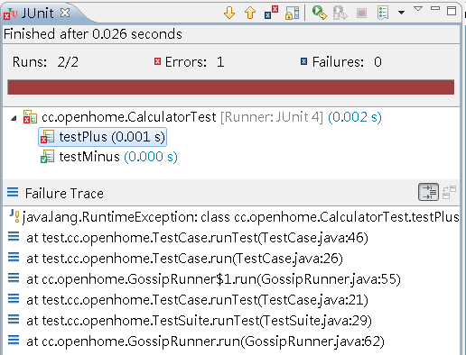

|
|
在
JUnit 3 中，TestRunner 是個啟始測試的入口，其角色在JUnit
4中，相當於 JUnitCore 的角色。 在JUnit 4中，自訂Runner的 意義在於，測試可以有各種執行方式，而不僅僅是JUnit 3中setUp()、testXXX()、 tearDown()的順序，JUnit 4中自訂Runner的方式，可以 讓使用者用自己想要的方式，自訂、擴充執行測試的方式。 舉例來說，你也許會想要將別的測試框架下所撰寫的測試程式，整合至JUnit 4中一併執行，就可以自訂Runner來執到目的。 事實上，JUnit 4中整合JUnit 3測試程式的方式，就已提供了JUnit38ClassRunner， 它擴充自Runner類 別。 Runner類 別有兩個方法必須實作： public
abstract Description getDescription();
public abstract void run(RunNotifier notifier); 測試的啟始點是run()方 法，run()方 法接受一個RunNotifier物 件，在測試的各個階段，會呼叫RunNotifier的各個通知方法， 通知對測試各階段感興趣，且有向RunNofifier註冊的RunListener。若過程中需要記錄相關資訊，則會使用Description物件加以記錄，你可以實作getDescription ()來傳回Description物件。 舉個例子來說，JUnitCore的run()方法是如下實作的： public Result run(Runner runner) { Result result= new Result(); RunListener listener= result.createListener(); fNotifier.addFirstListener(listener); try { fNotifier.fireTestRunStarted(runner.getDescription()); runner.run(fNotifier); fNotifier.fireTestRunFinished(result); } finally { removeListener(listener); } return result; } 這邊以先前開發的簡單框架最後成品作範例，示範如何自訂Runner，使之可在JUnit 4架構下執行： package cc.openhome; 這邊的重點之一，在於Description的建立，Description實作了 Singleton 模式 的概念，將建構式定義為private，因而必須 透過相關的靜態（static） 方法來建立Description物件。你可以根據測試的階層，事先建立好Description的 階層，每個階層的Description描述一個測試的結 果： Description description = Description.createSuiteDescription(clz); TestSuite suite = (TestSuite) test; for (Test t : suite.get()) { TestCase testCase = (TestCase) t; description.addChild(makeDescription(clz, testCase)); } return description; 之後若需要取得某階層的Description物 件，則可以指定類別與名稱來取得： TestCase testCase = (TestCase) test; return Description.createTestDescription(clz, testCase.getName()); 上面的範例將這兩個需求，撰寫在同一個makeDescription()中， 並透過instanceof來判斷要執行哪個。例如，在建立TestResult子類實例時，重新定 義的run()如下： public void run(TestCase test) { Description description = makeDescription(clz, test); notifier.fireTestStarted(description); try { test.run(); } catch (Throwable t) { notifier.fireTestFailure(new Failure(description, t)); } notifier.fireTestFinished(description); 由於先前的簡單範例框架並沒有實作的面面俱到，所以沒有如JUnit 3中，定義有RunListener，可以新增至 TestResult中，所以這邊採取了繼承TestResult後，重新定義run()的方式實作了通知的部份。 現在你可以在先前的範例中，CalculatorTest中如下使用： package cc.openhome; 以下在是在Eclipse中執行的結果（這邊沒有區分Error或 Failure，所以畫面中都用Error來記錄錯誤的部份）：  |